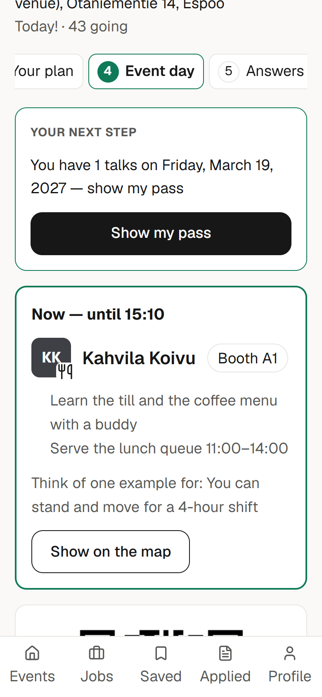
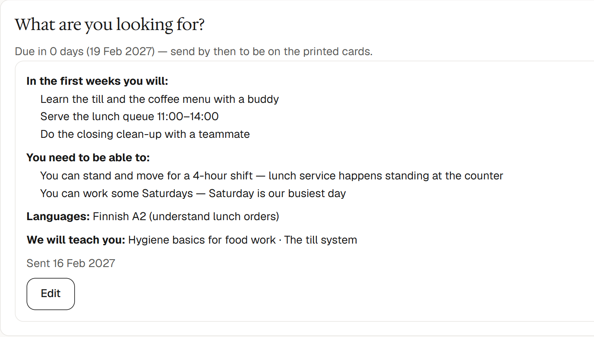
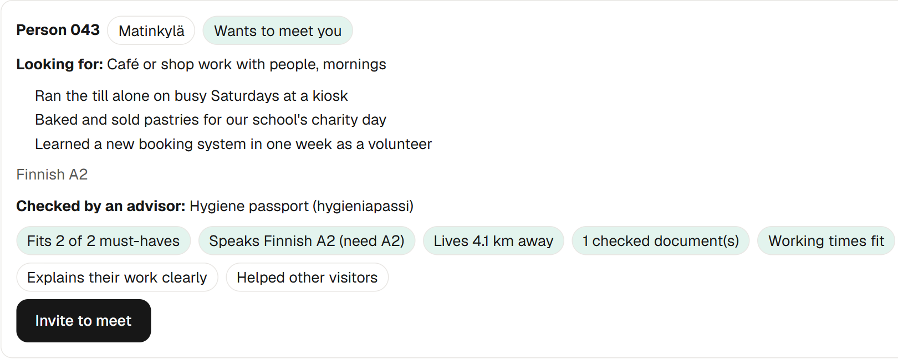
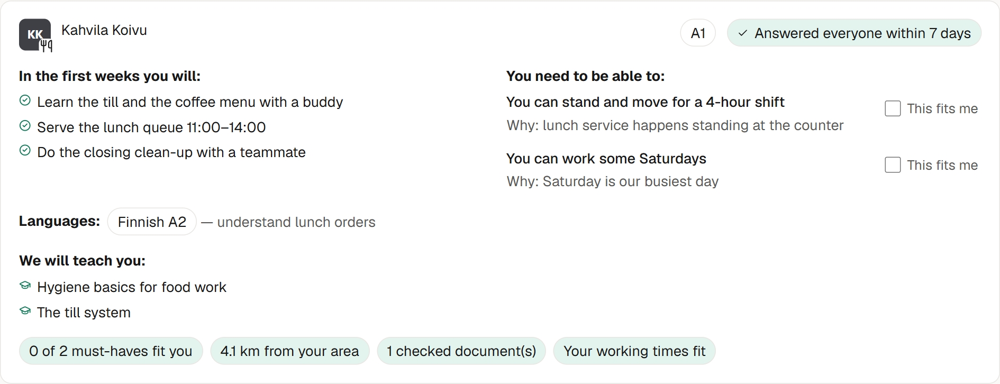
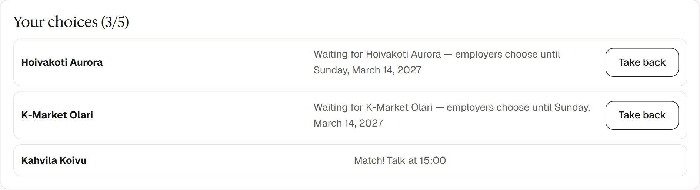
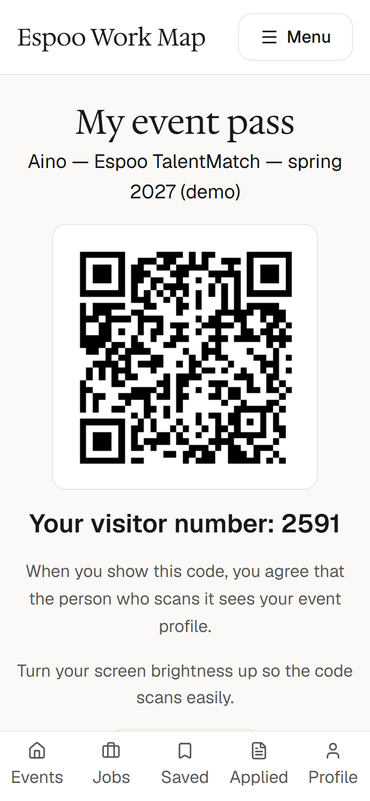
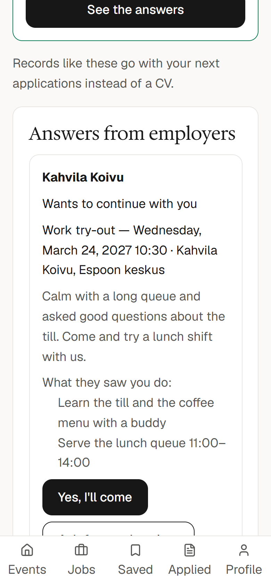
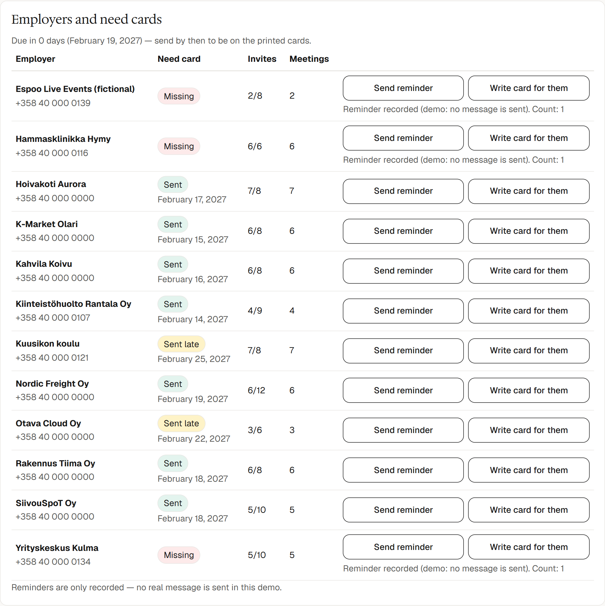
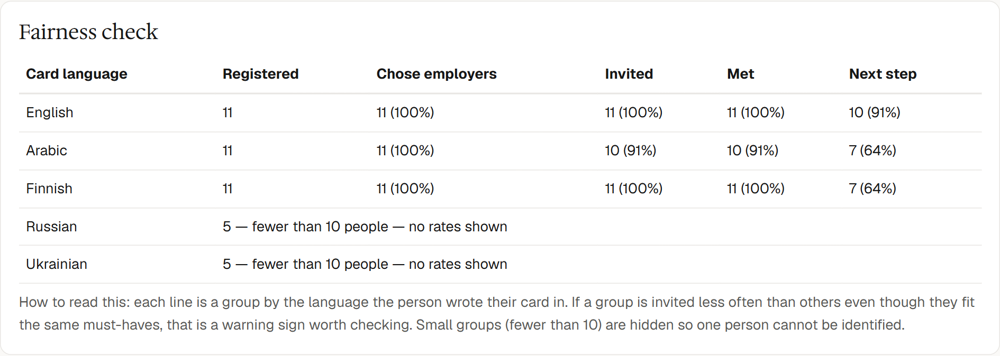
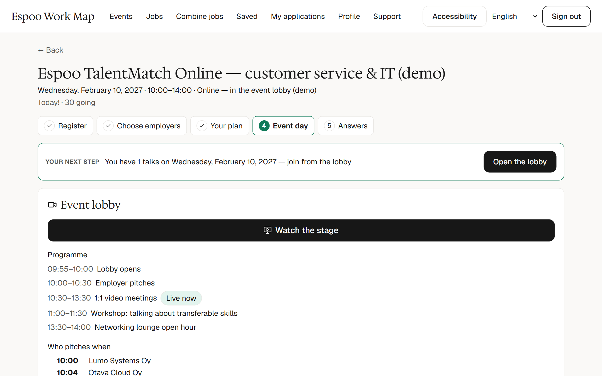

Recruitment events where people meet because they fit, not because their CV was polished.
From people, for people.

How can Espoo's recruitment events help companies and talent really find each other, when CVs are written by AI and screened by AI?
City of Espoo, Junction 2026 challenge brief
The employer list is published two weeks before the event. The real role is often explained only in the presentation on the day.
1 300 people registered for TalentMatch 2024, with 40+ organisations. Employer time is the bottleneck, so walk-in queues waste it.
AI-written profiles all look alike. People who did real work can't show it, and "good Finnish" is asked for with no reason given.
The employer describes the first weeks of the job and up to 3 must-haves, each with a reason.
The jobseeker writes 3 things they have done, in their own words. No CV.
Up to 5 employers each. Employers invite as many people as they have slots. Mutual interest books a talk.
A plan with times and booths. Scan the QR, talk, note what you saw.
Every talk ends with a concrete next step or a reason why not.
Three roles, one page each
The employer, the jobseeker and the city organiser each see their own steps. The app always shows the single next thing to do. Nothing can happen out of order.


Hidden until they meet:
Cards come in random order and nobody is ranked. Facts like the hygiene passport are checked by a city advisor, not just claimed.



Within 7 days: a concrete next step (interview, work try-out or a call, with a date and place) or "not this time" with a reason.
"Calm with a long queue and asked good questions about the till. Come and try a lunch shift with us."
Sanna → Aino · work try-out on Wed 24 March 10:30
Records like this go with Aino's next applications instead of a CV.


Need cards: on time, late or missing. Send a reminder, or write the card for the employer.

Fairness check: registered → invited → met → next step, by the language of the card. Groups under 10 people show no rates.

No ranking and no AI judging candidates. Matching follows simple, tested rules: must-haves, hours, area, language task.
Optional. It turns what the person wrote into clear lines, and they accept or edit them. If the AI is off, everything still works.
FastAPI + SQLite + React, self-hostable for the city. A demo clock plays the whole event in minutes.
automated tests
interface languages, incl. Finnish, Swedish, Arabic, Ukrainian
real personal data: synthetic demo data only
It runs next to the current event format, with no new platform for employers to learn. We would measure:
Do employers say what they need early enough?
Does every talk get a next step or a reason?
Are people invited equally, whatever language they write in?
From people, for people.